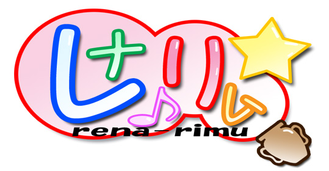
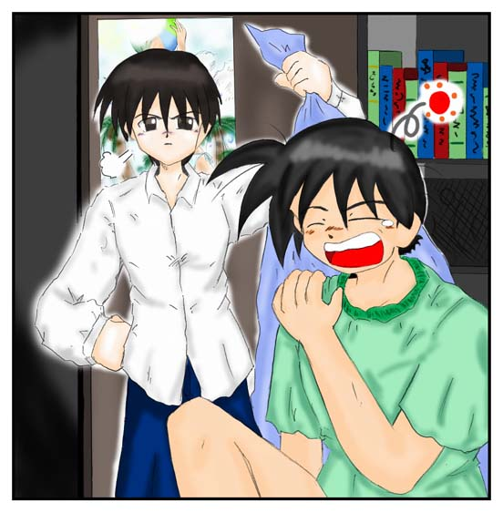
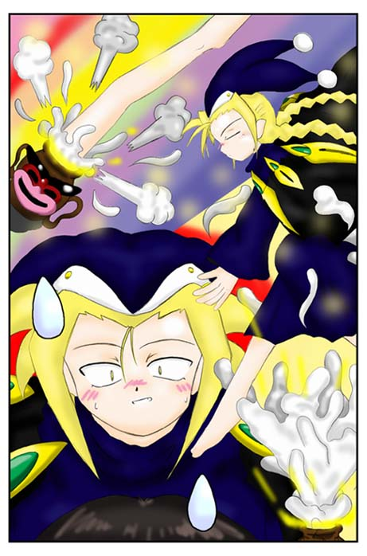
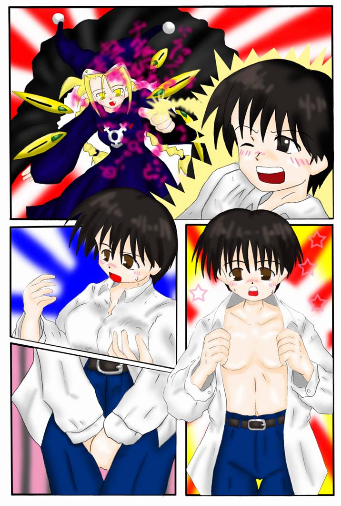
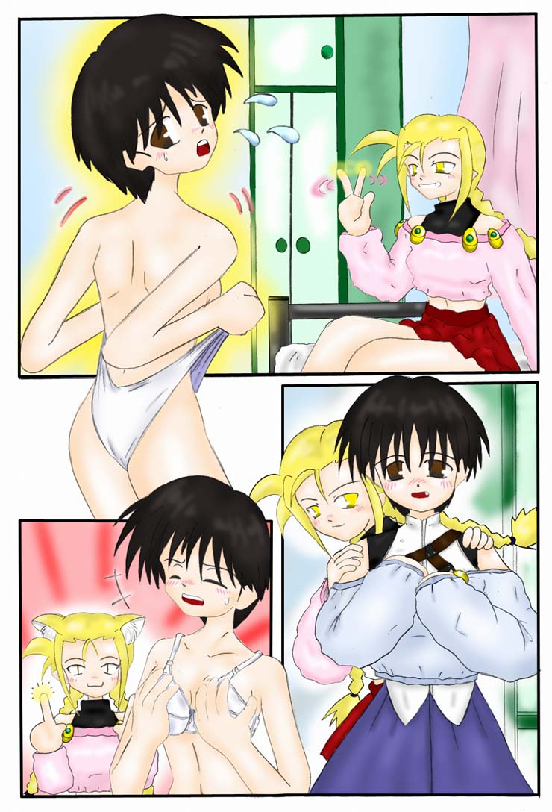
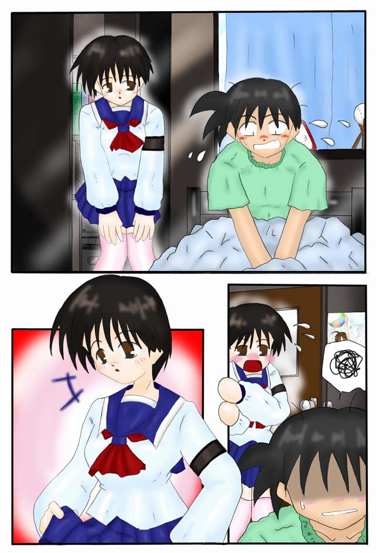
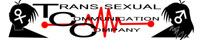

作：BAF 挿絵：角さん（T−コミ）
「おばさーん、おはようございますっ」
早朝の住宅街に、元気な少年の声がこだました。
年の頃は１６、７歳。ちょっと小柄で、優しそうな笑顔の似合う少年である。
彼の声に、道路の掃除をしていた一人の中年女性が振り向いた。
「あら、玲雄君おはよう。いつもいつもうちのバカ息子のために悪いわね」
少年の姿を確認すると、笑顔を浮かべてそんな言葉を漏らす。
「あはは、もう慣れっこになってますから」
玲雄と呼ばれた少年は、頭を掻いて笑った。
「ありがとうね、ほんとに。……多分まだ上で寝てると思うから、お願いね」
「わかりました。それじゃあお邪魔しま〜す」
そう言うと、玲雄は玄関を抜けて元気よく階段を上っていった。
二階に上がると、すぐ右にある部屋にノックもせずに入る。
案の定、カーテンはまだ開いていない。誰かがベッドの中で寝息をたてていた。
さっと手早くカーテンを開けると、玲雄はベッドの横に立つ。
「貴之……起きろよ貴之っ」
ベッドに向かって声をかける。
「……うーん…………もうちょっと……」
ベッドの中からはそんなくぐもった声が聞こえてきた。
「もうちょっとじゃない！ 早く起きないと遅刻するぞ！」
気の抜けたような返事に、玲雄の顔が引きつる。
どうやら実力行使に出ることにしたらしい。おもむろに布団をつかむと力いっぱい剥ぎ取った。
布団の中から、体格のいいスポーツマンタイプの少年が現れた。彼が「貴之」らしい。
彼は一瞬、寒さに体を縮めたが……観念してしぶしぶ目を開け、上体を起こした。
「はあ……何でいつも玲雄兄ぃなんだよ」
うつろな目で横に立つ玲雄を見つめると、恨みがましい声でそんなことを呟く。

「人の顔見てため息つくなよ。それになんだよ……親切に毎朝起こしに来てる先輩にその言いようは？」
「だいたい幼馴染の家に朝起こしに来るってのは、かわいい女の子の役目だろ！ ……なんで毎日、朝っぱらから野郎の顔見なくちゃなんないんだよ！？」
「ゲームや漫画じゃないんだから、そんな都合良くいくわけないだろ。……馬鹿言ってないで早く着替えろよ」
「ういー」
貴之は何とも気のない返事をすると、もぞもぞと動き出し着替え始めた。
「……玄関で待ってるぞ」
そう言うと、玲雄は部屋を出ていった。
「あーあ、可愛いってところだけは合格なのにな……」
そこまで言って貴之の思考が止まった。顔がだんだん赤くなる。
「……うわっ、何馬鹿言ってんだっ。玲雄兄ぃは男だぞ」
ポカポカと自分の頭を叩く。
「……ば、馬鹿やってないで着替えよう」
そう言葉に出して心を落ち着けると、彼は着替えを再開した。
待つこと五分。制服に着替えた貴之が玄関から出てきた。
「なんか顔が赤いぞ？ 大丈夫か？」
玲雄が顔を覗き込んできた。
「なんでもない」
動揺を悟られないように、ぶっきらぼうに答える貴之。
「……ならいいけどさ。そういや、ちゃんと朝食は採ったのか？」
「いや、俺は朝飯は食わない主義だからな」
貴之は、何もそこまでというほどに力強い口調で否定した。
「もう、健康に悪いなあ……」
何度も交わされた会話なのであろう。玲雄の方もそれ以上は言わず、歩き出した。
黙々と歩き続ける二人。並んで歩くとかなり身長差がある。
……ふと、貴之は思う。いつから一緒に登校するようになったのかと。
そう、あれは確か小学生のときの約束。
『あの約束、玲雄兄ぃは覚えているかな？』
気になって、頭一つ分下にある玲雄の顔を見下ろす。
その視線に気付いた玲雄が顔を上げる。
「……ん？」
その首を傾げる仕草が可愛い。思わず貴之の顔が赤くなる。「あ、あのさ……し、小学生の時の、や、約束覚えてるか？」
少し顔をそらして尋ねる貴之。
「ん……どれだ？ 俺を嫁さんにしてくれる、ってやつか？」
玲雄は少し意地悪な笑みを浮かべて、そんなことを言う。
「ち、違うっ。そんなんじゃないっ！」
いきなりの奇襲に、貴之は慌てて大きな身振りで否定する。
「冗談だよ。覚えているに決まってるだろ。大切な約束……」
「うわっ！」
玲雄は最後まで言うことができなかった。貴之が何かに躓いて、垣根に体当たりしてしまったのだ。
「いててて……」
貴之は何につまずいたのか確認しようとあたりを見回した。すると目の前に、古めかしい壷が一つ転がっていた。
『何でこんなものが？』
その疑問は簡単に解けた。自分の隣にごみ置き場があったのだから。
「ここから転がったのか？」
そう呟くと、ごみの山にその壷を放り投げた。
「大丈夫か？ 貴之？」
それまで心配そうにしていた玲雄が声をかけた。
「ああ、何も問題は無い」
そう言って体を見回すが、ふと頬に痛みを感じた。
手を当てると血が出てきた。どうやら木の枝にでも引っ掛けてしまったらしい。
「あ、血が出てるじゃないか！ ……じっとしていろよ」
そう言うと、玲雄はポケットの中からウェットティッシュとバンソウコウを取り出して、貴之の顔を拭きはじめた。
「い……いいよっ。自分でできるからっ」
慌てて離れようとしたとき。後ろから誰かに声をかけられた。
「よっ！ ご両人、相変わらず仲が良いね〜」
誰だ？ と振り向くと、見知った玲雄のクラスメイト立っていた。
冷やかすような声。……実際私服で歩いていると、貴之と玲雄はカップルに間違えられたことも一度や二度ではない。
だから玲雄は、そんな冷やかしには笑顔で答えることにしていた。
何故かその笑顔を見ると、大概の少年が顔を赤らめて逃げていくのだ。
そして今朝も例にもれず、冷やかした少年はそそくさと二人の前から去っていった。
「いつもいつも嫌になるよな、貴之」
そう言って、貴之の顔を見上げる玲雄。
何故か、貴之の顔が暗い。
「……貴之？」
心配そうに覗き込む玲雄。
「…………」
貴之が小さく何か呟いた。
「何？ 聞こえないぞ、貴之」
「……嫌なら迎えに来るなって言ったんだっ！」
そういうと、貴之はいきなり走り出す。
「あっ、待てよ、貴之っ」
玲雄も慌てて追いかけるが、まったく追いつかない。
途中で息が切れ、立ち止まると、もう貴之の姿は見えない。
「ハァハァ……なんだよ……アイツ？ ……ハァハァ……」
学校に着くと、玲雄は真っ先に貴之の姿を探したのだが、どこにも見当たらなかった。
もともと学年が違うので、学校ではそんなに顔を合わせないのだが、今日はそれにも増して、まるで避けられているがごとく会うことができない。
「……顔赤かったし、大丈夫かな？」
少し気になったが、今までそんな日が無かった訳でもないので、教室に戻った。
放課後になり、貴之の所属する陸上部に顔を出してみたが、「体調がすぐれない」と早退してしまったらしい。
やはりおかしい。貴之に何かあったに違いない。
そう思うと玲雄はじっとしていられなかった。
一目散に駆け出し貴之の家に向かう。
だが、あともう少しで貴之の家に着くという時、玲雄は不意に何かに足をすくわれた。
「うわっ！」
体制を立て直す暇もなく、道に盛大に倒れこむ。「……いたたたた」
すぐに起き上がり、倒れた原因を探す。するとそこには古めかしい壷が一つ。
「こいつのせいか……」
よく見れば、すぐ横にゴミ捨て場がある。ここから転がり出てきたのであろう。
「あぶないなあ、もう」
ゴミ捨て場に戻そうと壷を拾い上げると、一瞬目の前の景色がゆがみ、真っ暗になった。
はっと気づくと、そこは自分の家であった。「あれ？ いつの間に帰ってきたんだ？」
慌ててあたりを見回すが、紛れもなく自分の部屋であった。
ふと、机の上に目が止まる。
『ん！？ この壷は？』
机の上に、さっきゴミ捨て場で見た壷が置かれていた。
「えっ？ 俺、持って帰ってきちゃったの？」
そういえば、確かにゴミ捨て場でこの壷を見てからの記憶が消えている。
慌てて壷を手に取る玲雄。
手を触れた瞬間、それは突然七色に光りだした。
「うわわっ！」
慌てて手を離す玲雄。だが光は収まらず、それどころか壷の口から何かが現れた。
「あ、足！？」
すらりとした白い足が、壷の中からゆっくりと出てくる。
「……き、きれいな足だな」
玲雄は一瞬見とれてしまったが、その足は、太腿のあたりまで出たところでぴたりと動きを止めた。
「？」
いきなり足がじたばたと暴れだし、机の端を蹴る。
バランスを崩し、壷が机から落ちる。そして地面に落ち……割れた。
その瞬間、何かがそこから飛び出し、よける暇もなく玲雄にぶつかってきた。
その弾みで壁まで飛ばされる玲雄。体がぎしぎし痛み、感覚がはっきりしていくうちに、唇に何かやわらかいものが触れていることに気づいた。
恐る恐る目を開ける。するとその目に、ひとりの少女の顔が飛び込んできた。
いきなりのどアップに驚く玲雄。しかも唇同士が触れ合っている。
少女は気を失っているのだろうか。力なく玲雄に覆い被さっている。
「ん〜、んんん〜〜っ！！」
叫び声をあげたいが、口がふさがれ思うように声が出ない。
玲雄がじたばたしていると、少女が意識を取り戻してきたらしい。うっすらと目を開く。
「……うん？ ううん……」
どうやら意識がはっきりしてきたらしい。そして目を開ききると、いきなり驚きの表情に変わる。
次の瞬間、玲雄の頬に平手が飛んできた。
パチン！ という音が部屋中に響いた。「なにするのよっ、この変態っ！」
少女の気の強そうな目が、玲雄を睨み付ける。
「なにするのだって？ それはこっちのセリフだろ！ いきなり壷から出てきやがって……」
そこまで言って、玲雄の顔が青ざめた。「ま……まさか、化け物？」
震えて後ずさる。
「失礼ね、誰が化け物よ？ あたしはリム。れっきとした魔法使いよ」
そう言って少女が立ち上がった。金髪に気の強そうな瞳、すこし尖り気味の耳。それに似合わぬ黒いローブ姿。
確かにその服装は魔女そのものであったが、その顔立ちはどちらかといえば「お姫様風」であった。

「魔法使いのリム？」
もうここまできたら、玲雄にはさっぱり判らなかった。「魔法使い」という言葉を反芻するが、建設的な回答が得られる可能性は皆無に思えた。
「ホントはもっと長い名前があるんだけど、覚えなくてもいいわ」
そんな玲雄の心中にはお構いなしに、リムと名乗った少女はそう言い放った。
「そ……そういうことじゃなくて、魔法使いって何なんだよ！？」
何か論点がずれてきそうだったので、慌てて言い返す。
「……アンタ、魔法使いも知らないの？」
心底あきれたように玲雄を見るリム。
「知ってるとか知らないとかじゃなくて、そんなものいるわけないじゃないか。……もしいるとして、その魔法使いが何しに来たんだよ？」
玲雄が詰め寄る。
「この世界に逃げ……いえ、見聞を広めに来たのよ。……という訳で、あたしここに住まわせてもらうから」
何の脈絡もなくそう言い放つリム。
「なんでそうなるんだよ！？」
「ああ、安心して。あなたの『妹』っていうことにさせてもらうから。……それと、間違ってもさっきみたいに襲われないように、細工もさせてもらうわね」
玲雄の怒りの声にも耳を貸さず、彼女は大きく手を振りだした。何かの儀式のようだ。
「お……襲うなんてしてないだろっ」
玲雄が抗議の声をあげたが、その声は届かなかった。
リムは口の中で何か呪文を呟くと、右の人差し指を玲雄に向けた。
彼女の指から放たれた光が、玲雄を包む。
次の瞬間、玲雄の体が光りだした。
「うわっ！ 何だこれっ！？」
体が熱い……心臓の鼓動が早くなる……
苦しさに胸を押さえると、胸が手を押し上げてきた。
そんなに厚くも無かった胸板が柔らかく膨らんでいくのが、手の感触からわかる。
「な……何？」
慌てた声を出すが、その自分の声も今まで聞いたことがないほど高くなっている。
「え？ え？ え？」
体の所々で、引っ張られたり押しつぶされたりする感覚をおぼえる。
そんな状態が数十秒続いた後、不意に全身の熱が引いた。
「……はぁ、はぁ、はぁ……」
どうやら、収まったらしい。「い……一体、何をしたんだ？」
玲雄はリムを睨みつけ、問いただした。
「どうってこと無いわ。……ただ、今後あたしを襲うことがないように、女の子になってもらっただけよ」
「……は？」
「……だから、あなたに女になってもらったの」
リムはまたあきれたような表情になり、こともなげにそういった。
「な、なんだって？」
その言葉の意味にやっと気付き、玲雄は自分の体を確認する。
服越しに触る体の感覚は今までとまったく違っていた。確かに胸が膨らんでいるのが見てとれた。
慌ててワイシャツを脱ぎ捨て、鏡に向かう。
すると、小ぶりだが形の良い乳房が目に飛び込んできた。
「げっ！」
股間にも触れてみたが、本来あるべき「もの」を確認することができなかった。
「な……ない！」
動揺して、股間を探る手に力がこもる。「あ……ああっ！？」
敏感な部分に触れてしまったのか、体にぞくっとした電気が走る。
「なによ、エッチな声出しちゃって……」
腕組みをしながら意地悪そうな目つきで、リムは玲雄を見つめた。

「ち、ちがうっ！ そんなことより元に戻せ！」
リムに向かって掴み掛かろうとする玲雄。だがリムは、すんでのところで玲雄の手をかわす。
勢い余って壁に激突する。盛大な音がして、玲雄は壁際に倒れこむ。
「ちょっと、何をやってるの？ ご近所に迷惑でしょ！」
その音を聞きつけ、母親が部屋の扉を開けた。
「か、かあさん！？ あ、あああのこ、これは……」
慌てて胸を押さえて立ち上がる玲雄。母親は部屋の中を見回すと、顔をしかめて玲雄を睨みつけた。
「……玲奈、女の子がそんな格好していちゃだめでしょ？ 早く服着なさい。……それに理夢も、そんな変な格好していないで着替えなさいよ」
「玲奈？ 理夢？」
「はあい、おかあさん」
呆然とする玲雄に代わって返事をしたのは、リムの方であった。
「もうっ……。家の中にいるときでもちゃんとするのよ」
そういうと母親は部屋から出ていった。
「あーあ、怒られちゃった。……それじゃあ着替えようか、玲奈姉ちゃん」
はっと我に返り、リムを睨みつける玲雄。「……どうなってるんだよ？」
「どうって、今日からあたしたちは姉妹なの。みんなの記憶もそうなってるから安心して」
「ぜんぜん安心じゃない！ 元に戻せっ。すぐ戻せっ！」
「残念だけど無理。しばらくこんな大掛かりな魔法は使えないわ」
全く悪びれもせず、肩をすくめるリム。
「しばらく……って、どれくらいだよ？」
「そうね、少なくて一年ぐらいかしら」
「そ、そんなに？ それじゃ俺、一年もこんな姿のまま……」
玲雄はヘナヘナとその場に崩れ落ちた。
「……でもどう？ これであたしが魔法使いだって信じられたでしょ？」
「こんな形で信じさせられるとは思っていなかったけどな……」
リムに背を向け、ふてくされたような声で答える。
「もう、お姉ちゃんたら、拗ねちゃって可愛い」
クスクスと笑うリム。「あ、そんなことより早く着替えないと」
「着替えるったってどうするんだよ？ うちに女物なんか……」
玲雄の心配は徒労に終わった。リムがクローゼットを開けると、そこには女性ものの衣服がいくつも並べられていた。
「お姉ちゃん、どれ着る？」
そういいながら自分はさっさと着るものを取り出す。「初めてだから、あたしが選んであげようか？」
「え……？ い、いいよ」
慌てて断る玲雄だったが、リムの方はお構いなしだ。
「だーめ。……あっ、これいいわね、きっと可愛いよ。早く着てみて」
そう言いながら、色々と物色し品定めしていく。
「こ、こんなの着れるかっ！ 恥ずかしい！」
「え〜っ、絶対これだよ〜っ。これしかないよ〜っ」
まるで子供がだだをこねるようにせがむリム。しかし、玲雄は断固として突っぱねた。
「い・や・だ！」
「あっそう、そんなこと言うならこっちにも考えがあるよ」
「な、なんだよ？」
突然きつくなったリムの口調にたじろぐ玲雄。
「ふふん……こうするのよ！」
そう言うなり、リムが指を玲雄に向けた。魔法の光が玲雄に向かって飛ぶ。
「うわああっ！！」
光を浴びた玲雄は慌てて自分の体を確認したが、別に元に戻るわけでも、服を着せられたわけでもなかった。
「なんだ、何とも無いじゃないか……」
「ふふふ、そうかしら？」
「だって、なんとも……」
玲雄は最後まで言い切ることができなかった。なぜなら自分の体が意思とは関係なく動き出したのだから。
「……え？」
玲雄の顔に戸惑いの表情が浮かぶ。
しかしそんな表情とは裏腹に、体は勝手に動く。そしてその手はおもむろに腰のベルトをはずし、学生ズボンを脱いでいく。
「な、なんで？ 体が勝手に……」
ズボンを脱ぎ終わると、そのままトランクスに手をかけ、一気に脱いで一糸まとわぬ姿になる。
目の前ではリムがニヤニヤと笑っている。
「止めて！ とめてよぅっ！」
急に恥ずかしくなり、顔を赤らめお願いするが、リムは腕を組んだままそのありさまを見つめている。
そんな中、もちろん体は動き続ける。パンティを引き出しから出すと、何のためらいもなく履いていく。ちょっと強めに引き上げ、すそのところから位置を直す。
ぴたりと体にフィットする感覚があり、一瞬安心感を感じてしまう。だが、そんな余韻に浸る暇もなく、その手はブラジャーに伸びた。
「いやだ、いやだよぅ」
玲雄は、涙目になりながら訴えるが、リムはまったく動こうとはしない。
その間も自分の体は勝手に動き続け、ブラを胸に当てると、手を背中に回しホックをはめる。そして、胸に手を入れると位置を調整しだす。
手が胸に触れるたび、今まで感じたことの無い感覚が胸と手の両方から感じられる。
「あ……あ、あ……」
頭が真っ白になっていく。気がつくと、玲雄は着替えを終わって立ち尽くしていた。
鏡に向かって自分の服装を調べると、いかにもいまどきの女子高生といった感じのシャツとスカートに身を包んでいた。
「何でこんな格好に……」
「あら失礼ね。この部屋を作り変えたとき、ちゃんとあなたの好みも反映してあげたのよ」
「確かに可愛いとは思うけど、自分で着るとなると話は別だっ」
玲雄は今日何度目かの抗議の声をあげた。

「そんなことより設定を説明しておくわね。あたしはあなたの妹で、今まで病気療養のため親戚に預けられていたの。で、病気が治ったのでこの家に戻ってきた……いい？ わかったかしら？ ちなみに明日からあなたと同じ学校に通うからよろしくね」
「なんだって！？」
あまりのことに驚き、玲雄は唖然となる。
「私の呼び方は『理夢』でお願いね。あなたのことは『玲奈お姉ちゃん』と呼ばせてもらうから」
しかし、リム……理夢はそんなことお構いなしに話を続けた。
「なんで？ 何でこんなことに？」
玲雄……玲奈は今日一日を振り返りながら思いをめぐらす。いくら考えても、自分に起こったことの意味がわからない。
そんな時、はたと思い出すことがあった。
『そうだ、貴之！』
慌てて部屋を飛び出す玲奈。
「あ、ちょっと！」
理夢が呼び止めるが、聞こえないかのように外に出ていった。「……まあ、いっか。帰ってくるまでにもうちょっと住み易くしておきますか」
そう言うと、理夢は部屋に戻っていった。
玲奈は外に出ると、一直線に貴之の家に向かった。
変わってしまった自分のことを判ってくれるか、恐る恐る呼び鈴を鳴らすと、貴之の母が玄関に出てきた。
「……あら、玲奈ちゃん？ どうしたの？」
どうやら、ここでもちゃんと記憶操作されているらしい。「玲奈ちゃん」という呼びかけに「玲雄」という人格を否定されたようで、少し胸が痛んだが、今はそんなことを気にしていられない。
「あ……あの、貴之います？」
「いえ、まだ戻ってないみたいだけど……またあの子、何かやったのかしら？」
「あ……いえ、そんなこと無いです。また明日来ますね」
そう言って貴之の家を後にすると、玲奈は学校までの道を歩き出した。すると、とぼとぼとこちらに歩いてくる貴之を見つけた。
「貴之！」
「あ、玲奈姉！」
貴之のほうもこちらに気付いたらしい。いきなり方向転換すると、逃げ出した。
「あ、待て！」
慌てて追いかける玲奈。
少し走ったところの公園で、やっと貴之に追いついた。
「はぁ、はぁ……な、何で逃げるんだよ？」
玲奈が貴之を問い詰める。
「玲奈姉こそ、何で、追いかけて……くるんだよ……」
貴之の方も、結構息が切れていた。
「だって、今日、朝からおかしかったじゃないか……」
「……なあ、玲奈姉は何で毎朝迎えにきてくれるんだ？」
貴之が、ふとそんな言葉を漏らす。
「なんでって……昔約束したじゃないか」
「約束なんてもういいんだぜ。気にしなくても……」
「約束だけじゃないさ。お前のことが気になるからだろっ」
「お、俺のことが気になる？」
驚きに顔を真っ赤にする貴之。
「ち……ちがうっ！ 勘違いするなよ。そんな趣味無いからなっ」
「そんな趣味悪いかな、俺？」
落ち込む貴之。
「い、いやそうではなくて……そ、そうあれだ！ 男同士の友情みたいなやつ！」
「男同士……って、玲奈姉、女じゃん」
「とにかく友情なの。……そんなことはどうでもいい。俺は明日も迎えに行くからなっ！」
玲奈は照れ隠しのようにそう言い切った。
「ああ、わかったよ。……玲奈姉、今日はごめん」
「気にするな！ じゃあ明日な！」
そう言うと、玲奈は自分の家に歩き出した。
朝、目が覚める。……いつも見慣れたはずの天井が近い。
「あれ？」
ゆっくりと体を起こして周りを見渡すと、自分が結構高いところにいるのがわかる。
ベッドの淵から下を覗いた時、昨日の事を思い出した。
ここは何時の間にか置かれていた二段ベッドの上。自分の姿を確かめれば、昨日の夜、またもや理夢の魔法で泣く泣く着せられたピンクのパジャマ。
そしてその下には、少女の体。
「……夢じゃなかったんだ」
ため息が自然と出てしまう。ぼんやりと時計を見ると、いつもよりも十分も遅い。
「ああっ、貴之起こしにいかなくちゃ！」
慌てて飛び起きると、梯子を降り、部屋を出て洗面所に向かう。
身だしなみを整え、部屋に戻る。クローゼットを開けると、学校指定のセーラー服が掛かっていた。
「こ、これを着るのか……」
一瞬躊躇するが、もう時間がない。覚悟を決めて着ることにする。昨日の魔法の効果が続いているのか、戸惑うことなく着替えることができた。
朝食をあきらめ、そのまま家から飛び出した。
一目散に貴之の家に向かう。
「おばさ〜ん、おはようございま〜す」
貴之の母を、見つけいつものように声をかける。
「あら玲奈ちゃん、いつも悪いわね。あの子まだ寝てると思うからお願いね」
「……はい、わかりました」
「玲奈」と呼ばれることに若干の違和感を感じたが、気を取り直してそう返事をすると、玲奈は玄関をくぐって貴之の部屋に向かう。
部屋に入ると案の定まだ暗いままで、貴之もベッドの中で寝息をたてていた。
いつもどおりカーテンを開け、ベッドに向かう。
「貴之……起きろよ貴之っ」
玲奈がいつもと同じようにベッドに向かって声をかける。
「うーん……もうちょっと……」
ベッドの中からいつもと変わらない声が聞こえてきた。
「もうちょっとじゃない！ 早く起きないと遅刻するぞ！」
いつもどおりのやり取りがあり、いつもどおりに布団をつかむと力いっぱい剥ぎ取る。
いつもどおり貴之の姿が現れたところで、玲奈の動きが止まった。
数秒の沈黙があり、貴之も異変に気付く。
目を開けると、玲奈が貴之の元気にそそり立つ股間を凝視している。
「・・・＄％＆！？！？！？」
慌てて飛び起きる貴之。「こ……これは……これは……」
玲奈としては自分に無くなってしまった「もの」を感慨深げに見入ってしまっただけなのだが……貴之にそれがわかるはずもなく、しどろもどろになってしまう。
玲奈の方も今の状況がやっと客観的に見られるようになって、うつむき……顔を赤らめる。
「ご、ごめん……」
また一度の沈黙を破り、貴之が謝る。
「あ、謝られても困る……よ。それより早く着替えろよっ」
「あ……ああ」
「じゃあ、げ、玄関で待ってるから……」
それだけ言うと、玲奈は部屋を出ていった。

数分後、貴之が玄関から出てきた。
「じ……じゃあ行こうか」
「あ、ああ……」
ぎこちなく声をかけ合うと、二人は学校に向かって歩き出した。
「ちょっと待ちなさいよ！」
と、いきなり声をかけられて貴之と玲奈は振り向く。するとそこには、息を切らせて立っている理夢の姿があった。
「いい度胸ね……あたしを置いていくなんて」
「あ、いや、ごめん」
朝起きてから、理夢のことをすっかり忘れていたことに気付く。
「玲奈姉、この子誰？」
貴之が玲奈に問い掛ける。
「あ、ええっと、その……この子は……」
どう言っていいのか判らず、口ごもってしまう玲奈。
「あたしは玲奈お姉ちゃんの妹の理夢。……あなた結構かっこいいわね。あたしと付き合わない？」
そう言うと理夢は、貴之に腕を絡めてきた。
「え？」
「だめだっ！ そんなの！」
慌てて逆の腕を引っ張る玲奈。もちろん理夢の危険性を考慮したものである。
その拍子に貴之のひじが、玲奈の胸に触れた。
「あっ」「……うわ！」
見詰め合う二人……
「ちょっと、ちょっと何やってるのよ？」
理夢の抗議に、やっと我に帰る。
「「なんでもないよ！」」
二人の声がハモって住宅街にこだました。
−続く−
あとがき
どうも！ BAFです。今回のは結構色々考えて作りました。面白いと思っていただけたら幸いです。
あと、また角さんに挿絵をお願いいたしました。そちらもお楽しみください。
それではまた。

□ 感想はこちらに □